Chapter 5 Word forms: recognition
5.1 Chapter overview
Many of the phonological patterns that children learn are observations about the shapes and forms of the words in the language. Children exposed to English, for instance, will learn that words tend to have stress on the initial syllable or that they rarely contain sequences like /fk/ and /vg/. To start learning these patterns, they need to know some words, or to be more precise, word forms —the sound forms of words, such as /bebi/ (baby) and /fit/ (feet). It is by remembering a sufficient number of such word forms that they can make generalizations about the sound patterns of the words of the language.
But when and how do children start building a collection of word forms in their memory, that is, in their mental lexicon? What do the remembered forms look like? The information about the sound patterns of a word that we keep in our memory is called the phonological representation of the word. One way to study how phonological representations develop is to see when and how infants and children recognize words. In order to recognize a word in the language, we must match what we perceive in the speech with the representation of one of the words in our mental lexicon. By carefully examining this process, we should be able to gain insights into what the developing representations of words look like. That is the focus of this chapter.
5.2 The beginning of word form recognition
For infants to fully learn a word, they must know both the word form (e.g., /bebi/) and its meaning (‘a little person or animal’). But it is possible for them to be familiar with a word form before knowing its exact meaning. So to understand when they begin to learn the phonological representations of words in the language, we must see when infants start recognizing words, whether or not they understand their meanings. When does this happen?
The first sign that infants recognize word forms they hear around them appears around 4 months of age. By 4.5 months, English-learning infants listen longer to their own names than to other names (Mandel et al., 1995). They do so even when the other name has the same number of syllables and stress pattern (e.g., Johnny as opposed to Abby), which suggests that their representation of the sound patterns of their own names is more detailed than just the overall shape of them.
Around 6 months, infants begin to demonstrate their understanding of salient social terms (e.g., mommy, daddy) and common words for concrete objects such as food (e.g., apple, banana) and body parts (e.g., eyes, foot) (Bergelson & Swingley, 2012; Bergelson & Swingley, 2015; Tincoff & Jusczyk, 1999). In Bergelson & Swingley (2012), 6- to 7-month-olds (and 8- to 9-month-olds) heard an utterance naming one of the objects (e.g., “Look at the apple”) shown either in pairs of pictures, such as an apple and a mouth, or in a scene depicting many visual elements, such as a table with food-related items on it. In both visual setups, the infants shifted their gaze to the correct picture that matched the label. For example, they were more likely to look at the picture of an apple when they heard “apple” compared to when they heard “mouth”. In other words, they knew the label for an apple sounds like [æpl̩] rather than [maʊθ]. By 6 months, then, infants have already learned some word forms, including those that are used to refer to themselves and significant people around them, but also those that refer to some daily objects. The phonological representations they have built for these words are accurate enough to allow them to distinguish them from each other.
5.3 Infants’ word segmentation skills
Infants learn these word forms from the speech spoken around them. This would be a straightforward task if it were the case that an infant usually hears an adult saying words in isolation, like “Baby!” The infant then just needs to remember that [bebi] is a fixed sequence of sounds that means something. But this is not what usually happens. For one thing, the utterances infants hear usually contain more than one word. One estimate based on American mothers talking to their infants under the age of 12 months shows that, on average, only about 9% of all utterances addressed to infants consist of single words (Brent & Siskind, 2001). That means most of the utterances infants hear need to be segmented, or “chopped up”, into word units. This process is known as word segmentation. The challenge with carrying out word segmentation in real life is that, unlike printed words in many languages, there are no regular “blank spaces” between words in running speech, as we can see in Fig. 5.1.
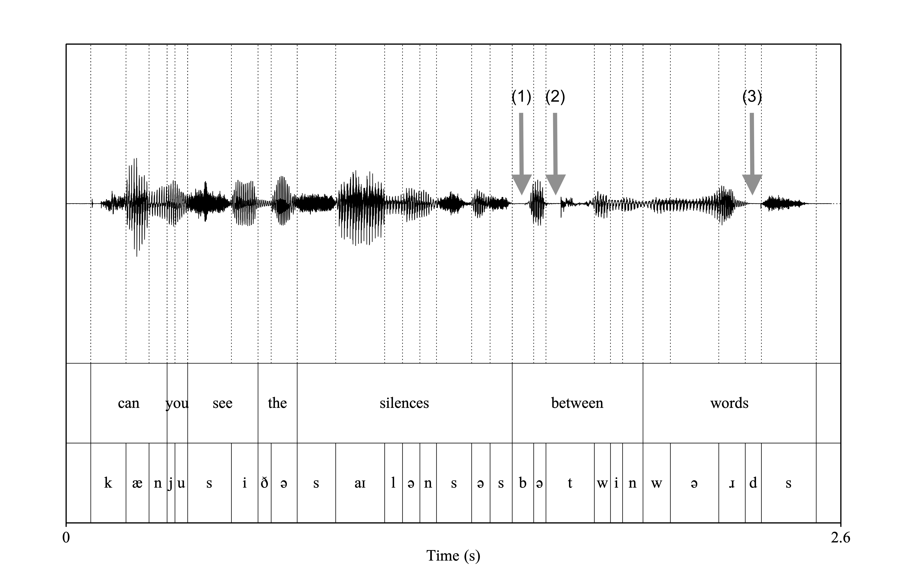
Figure 5.1: Waveform of the utterances ‘Can you see the silences between words?’. The few short gaps in the speech wave are due to the stop closure for (1) /b/ (in ‘between’), (2) /t/ (also in ‘between’) and (3) /d/ (in ‘words’), but only the first of these coincides with a word boundary. Otherwise, there are no silences between words.
Unsurprisingly, infants are good at learning words heard in isolation. A large portion of the words that 1-year-olds produce are those that they have heard in single-word utterances addressed to them between 9 and 12 months (Brent & Siskind, 2001). Experiments also show that words heard in isolation are more detectable than those heard in multi-word utterances (Jusczyk & Aslin, 1995) and that they help retain memory of heard words (Karaman & Hay, 2018). So even though they are not very frequent, single-word utterances provide an important source for learning word forms and their meanings.
But what about the remaining majority of utterances that infants hear, which contain more than one word? Do infants not learn words from such utterances until they have learned enough words from single-word utterances? Or can infants segment continuous speech into word forms by identifying their beginning and end without relying on acoustic breaks? In a landmark study, Jusczyk & Aslin (1995) showed that 7.5-month-olds learning American English can indeed perform such a task. The study was conducted using a method called the Headturn Preference Procedure (HPP). In one type of experiment, the infants were first familiarized with two words (e.g., cup and dog) which were read in isolation but repeated many times. This was followed by a test phase, when they heard four passages, each consisting of six multi-word sentences. Two of these had the words the infants were familiarized to (e.g., cup and dog). The other two had words they did not hear during the familiarization phase (e.g., feet and bike). The passages are shown in Table 5.1. The infants listened longer to the passages containing words that they heard during the familiarization phase. That means they could identify the familiarized words embedded in the test passages. Jusczyk & Aslin (1995) also ran a set of experiments in which the order of these materials was reversed. In those experiments, infants heard the passages during familiarization and then the isolated words at test. Again, they listened longer to the words they were familiarized with. In other words, they were able to extract the target words from the passages, remember them, and recognize them during the test phase. These outcomes show that the 7.5-month-olds in this experiment could segment and retain word forms they hear in running speech with multi-word utterances.
| Word | Passage |
|---|---|
| cup | The cup was bright and shiny. A clown drank from the red cup. The other one picked up the big cup. His cup was filled with milk. Meg put her cup back on the table. Some milk from your cup spilled on the rug. |
| dog | The dog ran around the yard. The mailman called to the big dog. He patted his dog on the head. The happy red dog was very friendly. Her dog barked only at squirrels. The neighborhood kids played with your dog. |
| feet | The feet were all different sizes. This girl has very big feet. Even the toes on her feet are large. The shoes gave the man red feet. His feet get sore from standing all day. The doctor wants your feet to be clean. |
| bike | His bike had big black wheels. The girl rode her big bike. Her bike could go very fast. The bell on the bike was really loud. The boy had a new red bike. |
- Box 4.1: Headturn Preference Procedure (HPP)
- The Headturn Preference Procedure (HPP) (Kemler Nelson et al., 1995) is used to test whether infants discriminate two types of auditory stimuli or whether they prefer one type over another. HTTP is performed in a three-sided booth, with a center panel and two side panels (Fig. 5.2). The participating infant sits on the caregiver’s lap, facing the center panel. Before each trial, the infant’s attention is drawn to a blinking light on the center panel. Once the infant looks toward that light, the experimenter, who is observing the infant’s face through a hidden camera, initiates the trial. At this point, the center light is turned off, and a light on one of the side panels starts flashing. Once the infant turns their head toward that light, an auditory stimulus starts playing from a loudspeaker on that side of the booth. The stimulus is played until the infant turns away from the light for 2 consecutive seconds or, otherwise, to the end of the stimulus. The experiment continues with the two types of stimuli being played randomly from either side of the booth. The total time the infant orients to the stimulus is then compared between the stimulus types. Depending on the types of material, the age of infants, and whether there is a familiarization phase before the test trials, infants may listen longer to stimuli that should be familiar to them (e.g., real words) or novel to them (e.g., made-up words). For this reason, most experiments are designed in a way that the hypothesis can be supported if there is evidence that a difference has been detected between the stimuli, regardless of the direction of the difference. The HPP is usually used with infants and toddlers between 6 months and 24 months of age.
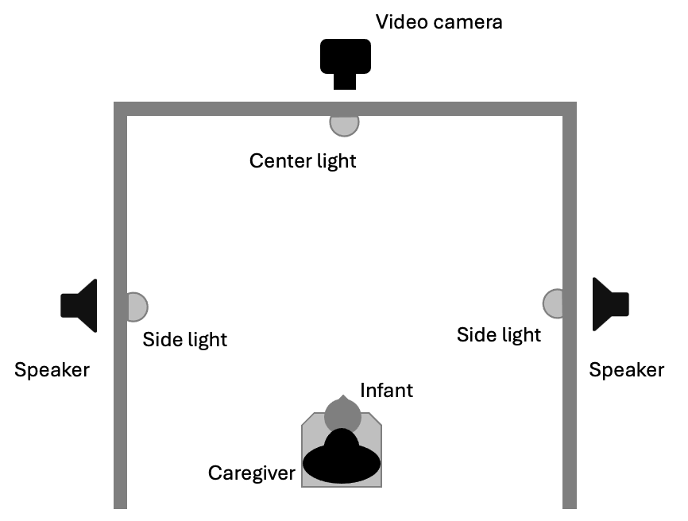
Figure 5.2: A bird’s eye view of a setup for the Headturn Preference Procedure
This experimental paradigm has also been used to demonstrate word segmentation abilities in infants learning other languages including Canadian French (Polka & Sundara, 2012), Catalan and Spanish (Bosch et al., 2013), Dutch (Houston & Jusczyk, 2000), German (Höhle & Weissenborn, 2003), and Parisian French (Nazzi et al., 2014). Interestingly, the exact age at which the effect is found varies even between dialects of the same language. Successful word segmentation is observed earlier for infants learning Canadian French than Parisian French (Nazzi et al., 2014) and for infants learning American English than British English (Floccia et al., 2016). These differences suggest that the information used to segment words in fluent speech may be more accessible to infants learning some languages/dialects than others. Despite such differences, most studies show that, at least under certain conditions, infants can extract word forms from short experimental exposure to multi-word utterances by 10 months.
5.4 Word segmentation cues
How do infants segment continuous speech into word forms if words are not separated by acoustic breaks? Before we address this question, it should be noted that there is evidence that from a very young age, infants use the syllable as a unit of speech segmentation. Infants only 4 days of age can discriminate word forms consisting of 2 syllables from those with 3 syllables (Bijeljac-Babic et al., 1993). They do this even when the stimuli are adjusted to make the words similar in overall duration, so they are using the number of syllables to make this distinction, not the length of the entire words. One-month-olds can discriminate changes in consonant ordering within a syllable (e.g., [tap] vs. [pat]), but not in a consonant-only sequence (e.g, [tʃp] vs. [pʃt]) (Bertoncini & Mehler, 1981). The same consonant sequences can be discriminated when they are flanked by vowels to make them processable as two syllables (e.g., [utʃpu] vs. [upʃtu]. These observations indicate that before infants start learning word forms, they already hear speech as a sequence of syllables, or at least units structured around vowels.
But being able to segment speech into syllables is not enough for word segmentation. Imagine that an infant hears the sequence pretty baby. Using the syllable as a unit of segmentation, this can be broken down into [prɪ][tɪ][be][bi]. That still leaves us with many word segmentation possibilities. Do [prɪ] and [tɪ] go together as a unit, and [be] and [bi] another unit? Or perhaps [prɪ] is one unit and [tɪbebi] is another? Or maybe the whole thing is one word? How do they know that it should be [prɪtɪ] and [bebi]? In the past few decades, a number of studies have been carried out to address this very issue. As a result, we now know that there are four types of information or cues that infants can use to determine when a word begins and ends. We discuss each of these below.
5.4.1 Transitional probabilities (TPs)
The first type of information infants can use to segment speech into word forms is the transitional probability between sound units, or the likelihood with which one sound or sound pattern is followed by another. Let us go back to the example of pretty baby, which we said could be segmented into a sequence of syllables: [prɪ][tɪ][be][bi]. When infants listen to the speech addressed to them daily, how likely is it that they hear the syllable [prɪ] immediately followed by [tɪ]? Fairly likely, because pretty is a word. Compare that to the transitional probability from [tɪ] to [be]. The sequence [tɪ][be] crosses a word boundary; it is a combination of the final syllable of one word and the initial syllable of another. Because there are so many words other than those beginning with [be] that could follow a word ending in [tɪ], the probability of [tɪ] followed specifically by [be] in everyday speech is much smaller than [prɪ] followed by [tɪ]. Because of these consequences of wordhood on the likelihood with which one syllable follows another, transitional probabilities can be used as a cue for word boundaries. When you listen to some speech and there is a sequence of syllables with a noticeably lower transitional probability, there is a good chance that there is a word boundary separating those syllables.
For this information to be useful for word segmentation, infants first must be able to keep track of transitional probabilities between syllables, and then use that sequential statistics to determine the location of word boundaries. In a highly influential study, Saffran et al. (1996) tested these abilities using an artificial language consisting of 4 trisyllabic words. In one version of the artificial language, the made-up words were pabiku, tibudo, golatu, and daropi. These words were strung together randomly without immediately repeating the same one to create a single familiarization string of syllables that sounded like pa-bi-ku-da-ro-pi-go-la-tu-da-ro-pi-ti-bu-do-go-la-tu… The string was generated using a speech synthesizer with a monotone female voice without pauses, stress, or any other acoustic or prosodic cues that indicated word boundaries. The experiment was carried out using the Headturn Preference Procedure. During the familiarization phase, this string was played continuously over 2 minutes to 8-month-old English-learning infants. In the test phase, one of four trisyllabic strings was repeatedly played in each trial. Two of these strings, pabiku, tibudo, were “words” embedded in the long sequence. The other two, tudaro and pigola, were “part-words” created by concatenating the last syllable of a word (e.g., golatu) and the first two syllables of another (e.g., daropi). Note that the sequences corresponding to “words” and “part-words” were both in the familiarization string (See Fig. 5.3). The difference is that the “words” had a transitional probability of 1.00 (or 100%) between syllables 1 and 2 and syllables 2 and 3. In contrast, the “part-words” had a transitional probability of 1.0 between syllables 2 and 3, but 0.33 (33.3%) between syllables 1 and 2, because the last syllable of a word was randomly followed by the initial syllable of one of the other three words. The experiment found that the infants listened longer to the part-words than the words. The only plausible explanation of this is that the 8-month-olds successfully segmented the “words” in the exposure string and remembered them, making the “part-words” in the test trials sound unfamiliar, drawing their attention to them more than the familiar-sounding “words.” The implication is that just after 2 minutes of listening to continuous speech, the infants were able to extract word forms based on transitional probabilities between syllables.
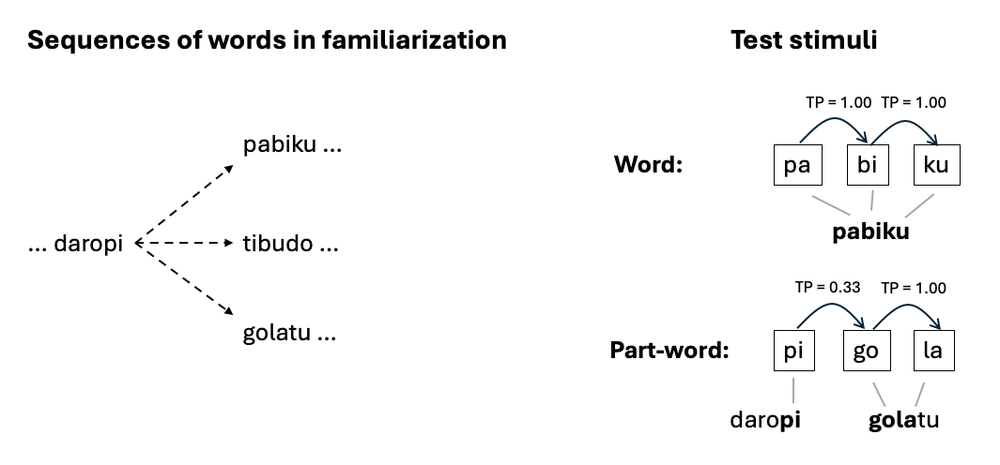
Figure 5.3: Examples of word sequences and test stimuli in Saffran et al. (1996). TP stands for transitional probability
🔈 Here is a 25-second sample of an exposure string that is created in a similar way to Saffran et al. (1996). The four underlying trisyllabic words are different from the ones used in Saffran et al. (1996). Can you identify them? Source: Vuvan & Wojcik (2020).
Since the publication of Saffran et al. (1996), a range of similar experiments have been carried out to refine and expand our understanding of the role of transitional probabilities in early word segmentation. Some studies have explored the age at which infants exhibit this ability, and demonstrated that the task can be performed even by neonates who are 2 to 5 days old (Fló et al., 2019). The effect is not limited to trisyllabic sequences but can also be obtained with sequences consisting of two syllables (Thiessen & Saffran, 2003). The original experiment was repeated with slightly modified stimuli, making sure that words and part-words occurred equally frequently in the familiarization string. Infants still learned to discriminate them, confirming that the effect is not due to the frequency of syllable co-occurrences (e.g., how often you hear the combination pigo) but to the transitional probabilities between them (e.g., the likelihood of hearing go after you hear pi) (Aslin et al., 1998). Further studies have shown that the ability that underlies this learning process is not unique to linguistic stimuli. In nonlinguistic analogs of the experiment by Saffran et al. (1996), infants were also capable of segmenting sequences of visual stimuli with different colors and shapes or musical tones based on transitional probabilities from one visual object or tone to another (Kirkham et al., 2002; Saffran et al., 1999). The consensus, therefore, is that infants’ ability to use transitional probabilities in segmenting words is domain-specific, and part of a broad set of statistical learning skills that allow infants to extract patterns from their environment using statistical information (Saffran & Kirkham, 2018).
But how well does this ability scale up to natural language, which is more complex than a sequence of uniformly disyllabic or trisyllabic words? On the one hand, it has been demonstrated that this effect is not an artefact of artificial stimuli. Similar results have also been obtained when natural languages are used instead. For instance, when English-learning 8-month-olds listen to an Italian passage recorded by a human talker, they remember sequences of two syllables with a high transitional probability better than those with a low transitional probability (Pelucchi et al., 2009). On the other hand, some studies have shown that the ability to track transitional probabilities between syllables is less robust when there is more variation in the size of the words that need to be extracted from fluent speech. Even when an artificial language is used, neither 5-month-olds nor 8-month-olds can segment a string containing words that vary in length between two and three syllables) (Johnson & Zamuner, 2010). It appears that infants succeed in the task only when the words have regular length, something that is not true about natural language. These findings suggest that, while the ability to track and use transitional probabilities is undeniably there, it by itself may not solve the initial challenge of segmenting words from natural linguistic input. Other types of information are probably also necessary to allow infants to find words in running speech.
5.4.2 Prosodic edges
I mentioned above that there are no acoustic cues such as silences that reliably mark word boundaries. But there is acoustic information that could be used to identify the beginning or end of at least some words. Imagine a child hearing a mother saying, “Do you wanna banana, or an orange?”. An utterance like this typically has a noticeable silence before and after it. As we can see in Fig. 5.4, there is also a silence between “Do you wanna banana” and “or an orange?”. Chunks of words such as “Do you wanna banana” and “or an orange” as well as the entire utterance that are organized into phonologically coherent units are called prosodic phrases. Prosodic phrases are often, though not always, demarcated by a pause. In many languages, segments at the beginning of a prosodic phrase are strengthened, and those at the end are lengthened. The end of a prosodic phrase also tends to exhibit larger pitch movements. The beginning and end of a prosodic phrase or an utterance are called prosodic edges, and they coincide with either the beginning or an end of a word.
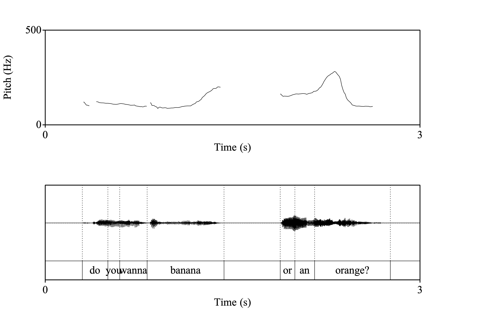
Figure 5.4: Waveform and F0 tracking of the utterance ‘Do you wanna banana, or an orange?’ Silence can be seen between the two prosodic phrases ‘Do you wanna banana’ and ‘or an orange’, as well as before and after the entire utterance. The two prosodic phrases end in a pitch rise and a pitch rise-fall, respectively
Could infants exploit this alignment between word and phrase edges to segment words? Using the same experimental design as Jusczyk & Aslin (1995), Seidl & Johnson (2006) and Johnson et al. (2014) demonstrated that 6-month-olds and 7.5-month-olds are more likely to remember hearing words that occur either utterance-initially or utterance-finally than those occurring utterance-medially in familiarization passages. The word forms infants remembered in these experiments were quite accurate (e.g., if the target word in the familiarization was geff, they responded to geff at test, but not to eff) and generalizable (e.g., if the familiarization words were presented in a female voice, they still responded to them later when they were presented in a male voice). Thus, infants’ ability to segment word forms aligned with utterance edges is quite robust.
As with transitional probabilities, prosodic edges are information that infants can use without language-specific prior knowledge. Corpus analysis shows that this strategy is particularly suited for segmenting the type of language input infants are exposed to (Johnson et al., 2014). In infant-directed speech, utterances are shorter than in adult-directed speech, making a larger proportion of words occur in utterance edges. Words that tend to appear at utterance edges also tend to be more frequent than those that usually appear in utterance-medial positions.
5.4.3 Previously-learned words
Once infants start learning some word forms through one of the strategies discussed so far, those word forms can be used as anchors for further word segmentation. If they already know baby and hear [prɪ][tɪ][be][bi], then they can infer that [tɪ] is the end of a word because the next syllable [be] is the beginning of a known word form, [bebi]. In this way, knowledge of some word forms can be leveraged to segment more from fluent speech. If infants can exploit this type of information, we expect to see them perform word segmentation using word forms that they are known to acquire early, such as their own name and names of important people such as mommy and daddy.
This hypothesis was tested in a series of experiments by Bortfeld et al. (2005). In one experiment, Bortfeld et al. (2005) used the same passages as Jusczyk & Aslin (1995) to familiarize 6-month-olds to target words like cup and bike, except that under one condition, the target word was always preceded by the name of the participating infant (See Table 5.2). In another condition, the target word was preceded by a different name. Looking times at test showed that the infants recognized the target words but only when it was preceded by their own name. In another experiment, the target words were preceded by the name used for the participating infant’s mother (e.g., Mommy, Mama) or a similar-sounding name (e.g., Lolly, Lola). Again, the infants recognized words that always followed Mommy or Mama, but not the ones that followed Lolly or Lola, indicating that they were segmenting the word form following Mommy or Mama based on their familiarity with those words.
| Passage 1 | Passage 2 |
|---|---|
| Maggie’s bike had big, black wheels. The girl rode Maggie’s bike. The bell on Maggie’s bike was really loud. She knew Maggie’s bike could go very fast. The boy played with Maggie’s bike. Maggie’s bike always stays in the garage. | Hannah’s cup was bright and shiny. A clown drank from Hannah’s cup. The other one picked up Hannah’s cup. Hannah’s cup was filled with milk. She put Hannah’s cup back on the table. Some milk from Hannah’s cup spilled on the rug. |
What this shows is that as early as 6 months of age, infants are not only capable of segmenting speech from the bottom up, using statistical and acoustic information such as transitional probabilities and cue for prosodic edges, but also by applying their existing knowledge of word forms in a top-down fashion, matching phonological forms that they already know against the speech stream.
5.4.4 Learned phonological patterns
There is another way in which previously learned words can be used for word segmentation. Words in a given language often have some common prosodic characteristics (e.g., frequent position of stress in words) and phonotactics (e.g., frequent segmental sequences that occur within words). Once infants have learned a sufficient number of words, they may begin to understand these phonological patterns of a typical word in the language, which in turn can guide them toward units of sounds that are likely to be a word form.
The most convincing demonstration of the role of prosodic patterns in word segmentation comes from a series of experiments carried out by Jusczyk et al. (1999), who showed that English infants segment words from running speech based on the tendency for English words to have stress on the initial syllable. Most of the experiments in this study used the passage-then-word paradigm from Jusczyk & Aslin (1995) described in Section 5.3. Infants were familiarized to two passages, each containing a target word, and were then tested on their response to those two word forms and two other forms they did not hear. The basic idea was that if they preferred to listen longer to the heard words than the unheard ones, they must have been able to detect and extract the heard forms out of continuous speech. Example materials for the key experiments are given in Table 5.3. In one such experiment, 7.5-month-olds showed evidence that they could segment out of the passages disyllabic words with initial stress (e.g., kingdom, hamlet), consistent with the hypothesis that they were using stressed syllables as a marker of word onsets. However, when infants were familiarized to passages containing initially-stressed disyllabic words (e.g., kingdom, hamlet) and tested on monosyllabic words corresponding to the stressed syllable (e.g., king, ham), they could not differentiate them from similar monosyllabic words (e.g., dock, can). Jusczyk et al. (1999) hypothesized that this was because in words like kingdom and hamlet, a stressed syllable is always followed by the same unstressed syllable, leading the infants to treat the combination of the stressed and unstressed (or strong-weak) sequence as a word. To verify this, further experiments were carried out with finally-stressed (or weak-strong) disyllabic words (e.g., guitar, device). When the weak-strong word in the passage was followed by a range of different weak syllables, the infants remembered hearing forms corresponding to the stressed syllables (tar, vice). But when the weak-strong word in the passage was always followed by a weak monosyllabic word (e.g., is), the infants did not respond to the stressed monosyllable (e.g., tar). Instead, they remembered the strong-weak sequence (tar is), even though underlyingly they were not a single word. By 7 months, English-learning infants apply their knowledge that a stressed syllable is very likely to be the beginning of a word to segment words. In particular, they tend to remember a strong-weak prosodic sequence as a word form.
| Experiment | Example passage for familiarization | Test results |
|---|---|---|
| 2 | Your kingdom is in a faraway place. The prince used to sail to that kingdom when he came home from school. One day he saw a ghost in this old kingdom. The kingdom started to worry him. So he went to another kingdom. Now in the big kingdom he is happy. | Preference for “kingdom” over “candle” (not in familiarization) |
| 3 | (same as above) | No preference for “king” over “can” |
| 9 | The man put away his old guitar. Your guitar is in the studio. That red guitar is brand new. The pink guitar is ine. Give the girl the plain guitar. Her guitar is too fancy. | Preference for “tar” over “ray” (not in familiarization) |
| 10 | Your guitar is really a fine instrument. But she says that the old guitar is great. In the attic, her guitar is hidden away. My pink guitar is not nearly as special. I think that a red guitar is better looking. But if you want to play, a plain guitar is fine. | No preference for “tar” over “ray” |
| 11 | (same as above) | Preference for “taris” over “rayon” |
By 9 months, English-learning infants also segment words using their knowledge of frequent sound sequences of the language (i.e., phonotactics). When they hear unfamiliar initially-stressed disyllabic word forms with the structure CVC.CVC (C= consonant, V = vowel), they show different listening preferences depending on the probability of the middle two consonants. In English, some consonant-consonant sequences, such as /ŋk/, are more likely to occur within words than between words (“within-word clusters”). Others, such as /mk/, are more likely to occur between words than within words (“between-word clusters”). Mattys et al. (1999) reasoned that because English-learning infants tend to perceive strong-weak stress patterns as single word forms, if they are aware of these phonotactic differences, they should find a novel initially-stressed CVC.CVC sequence better formed when the middle consonants are within-word clusters. On the other hand, they should find a novel finally-stressed (weak-strong) CVC.CVC sequence more wordlike when the middle consonants are between-word clusters because the stress pattern suggests that the second syllable is the beginning of a different word. In support of these predictions, 9-month-olds preferred listening to CVC.CVC forms with within-word clusters (e.g., /nɔŋ.kʌθ/, /sʊf.tʌs/) over those with between-word clusters (e.g., nɔm.kʌθ, sʊv.tʌs) when there was stress on the initial syllable. But when the stress was placed on the last syllable, they preferred them with between-word clusters than with within-word clusters (Mattys et al., 1999). These results show that 9-month-olds can use not only prosodic cues but also phonotactic cues to segment words.
5.4.5 Using multiple cues for word segmentation
The study by Mattys et al. (1999) we have just discussed shows that infants have access to more than one type of cue to determine where the boundaries of words are. This raises the following question: How do infants navigate the multiple sources of information available for word segmentation? There are three points to consider in answering that question.
First of all, not all cues are equally accessible during development. Some types of information, such as transitional probabilities, can be used without prior knowledge about the language that is being learned. As such, they are immediately accessible from birth (Fló et al., 2019). The silences typically heard between utterances may also fall into this category of cues in the sense that they can be applied to any language. But other types of information, such as the typical prosodic shapes and phonotactics of words, are unique to each language, so they are not available to the infant until the language-specific properties are learned first. The use of already-learned words as anchors also entails that the infant has already learned those word forms. These cues build on what infants have learned up to that point about the word forms and actual words of the language. It stands to reason, then, that infants’ use of the latter type of segmentation cues (e.g., prosodic cues) is observed later than use of more language-general ones (e.g., transitional probabilities). When English-learning infants between the ages of 6.5 and 7 months are familiarized with a string of syllables arranged such that transitional probabilities and stress patterns indicate different word boundaries, they use transitional probabilities rather than stress cues to segment words (Thiessen & Saffran, 2003). This suggests that at this age, infants are less reliant on prosodic cues, the language-specific characteristics of which must be learned through other means, including transitional probabilities.
Second, infants need to learn how to consolidate the information provided by different cues. In the study by Mattys et al. (1999), the 9-month-old infants looked for a segmentation pattern that is consistent with both the prosodic and phonotactic cues, demonstrating that by then, they have learned to integrate multiple cue types. This ability seems to develop some time between 6 and 9 months. When clusters of syllables are presented with prosodic and/or sequential cues, 9-month-olds perceive them as a coherent unit only when the grouping is supported by both cues, but 6-month-olds treat the syllables as a unit even when the grouping is supported by a single cue (Morgan & Saffran, 1995). There is also evidence that 9-month-olds can combine word segmentation cues from transitional probabilities and occurrence of word forms in isolation (Lew-Williams et al., 2011).
Third, infants’ strategies in weighing different types of cues change over time. When 8- and 9-month-olds are exposed to strings of syllables in which transitional probabilities and stress patterns are pitted against each other so that they indicate different word boundaries, they segment words following the stress cue (Johnson & Jusczyk, 2001; Thiessen & Saffran, 2003). Note that this is the opposite of what the 6.5- to 7-month-olds did in Thiessen & Saffran (2003). One possible explanation is that between 7 and 8 months, English-learning infants reach a stage when their knowledge of prosodic patterns becomes firm enough to be applied to word segmentation in the face of conflicting cues. Once infants acquire prosodic cues, they use them more readily than transitional probability cues because they can make decisions based on stress cues upon hearing one stressed syllable, while decisions based on transitional probabilities require listening to several instances of syllable transitions. By 9 months, prosodic cues are also prioritized over phonotactic cues when they are in conflict (Mattys et al., 1999).
5.5 Word recognition and the representations of early words
In Section 5.2, we learned that as early as 4 months of age, infants respond to their own names, and that from 6 months, they recognize words referring to significant people (e.g., mommy, daddy) and common objects (e.g., apple, feet). In Section 5.3, we reviewed a range of word segmentation studies that show that infants discriminate word forms they have heard from those they have not heard. All of this means that during the first year of life, infants become capable of remembering word forms in a way that allows them to match them with a form that they have just heard. What exactly do these remembered forms look like? How accurately are they remembered? And in what form is that information retained? In other words, what types of phonological representations do infants and children use when they recognize words?
It is important to keep in mind that there are two issues here. The first is to do with the phonetic detail of the remembered form. The second is about whether the remembered form looks like the way it is represented in the mental lexicon of adult speakers. These are related but separate issues. We can imagine a scenario in which infants have a very precise phonetic memory of, say, the word cat but purely based on how it sounds acoustically such that they can reliably tell it is not the same as pat or cot but without representing it as /kæt/; that is, as a combination of discrete segments or contrastive phonological units /k/-/æ/-/t/, which is how it is often thought to be encoded in the adult listeners’ mind. Evidence that infants’ knowledge of word forms is phonetically detailed is not the same as evidence that their representations of word forms consist of segment-like units. With that in mind, let us first examine infants’ ability to recognize familiar words to see what it can tell us about the phonetic detail of their representations.
5.5.1 Phonetic detail of familiar words
As mentioned earlier in the chapter, English-learning 4.5-month-olds know more about the phonological shape of their own name than just the number of syllables and stress pattern (Mandel et al., 1995). But how much more do they know about the phonetic detail of their name? If they remember their names in full detail, then they should be able to tell the difference between their own name and a name that is only slightly different. This has been confirmed with French-learning 5-month-olds, who show a preference for their real names over ones with a different initial vowel (e.g., Alix vs. Elix) (Bouchon et al., 2015). However, they do not show the same response to a “mispronounced” name with a different consonant (Zictor instead of Victor) (Bouchon et al., 2015). English-learning 5-month-olds do not differentiate their own name from ones that have a different initial consonant (e.g., Nolly instead of Molly) or a vowel (e.g., Ipril (Delle Luche et al., 2017). At this age, infants’ representations of their own name—the word form they are probably the most familiar with—do not appear to contain all the information that reliably distinguishes differences corresponding to consonants and vowels.
A similar approach can be used to examine the representations of common words that older infants should be familiar with. If their memory of a familiar word form (e.g., tummy) is accurate enough, we expect them to be able to differentiate it from a “mispronounced” word created by changing one sound in the familiar word form (e.g., summy). We also expect them to treat a mispronounced word, such as summy, like an unfamiliar word (e.g., tenor) rather than a familiar word (e.g., tummy). These predictions have been tested in several languages (e.g., English, French, and Dutch) using the Headturn Preference Procedure (Hallé & De Boysson-Bardies, 1996; Swingley, 2005; Vihman et al., 2004). The results show that 11-month-olds listen longer to (correctly pronounced) familiar words than to unfamiliar words. More importantly, they do not show this preference when the initial consonant of familiar English words is altered (e.g., summy instead of tummy). This means they know how familiar words should sound well enough to treat a mispronounced word like summy as an unfamiliar word. However, in later trials of these experiments, infants often listen longer to mispronounced words than unfamiliar words when the altered sound is the onset of an unstressed syllable in a English word (e.g., tuvvy instead of tummy) or the initial consonant in a French word (e.g., pallon instead of ballon ‘ball/balloon’). French does not have lexical stress, but it has phrase-final accent that usually falls on the last portion of words in isolation, making the initial syllable in these stimuli less salient than the last one. A generalization that applies to both English and French, then, is that when 11-month-olds repeatedly hear words that are mispronounced in a syllable that is not salient, they begin to respond as if they are real words. This suggests that 11-month-olds’ phonetic memory of nonsalient parts of a word may be less firmly established compared to salient positions.
So far, we have been talking about the representations of familiar word forms without any reference to the meaning of the words. But how well do infants know the phonetic detail of familiar words when their meanings matter? This has been investigated using a preferential looking paradigm in which a pair of pictures is shown on a computer screen and one of the pictures is named (“Where is the X?”). In some studies, the two pictures represented a minimal pair, such as doll and ball (which rhyme in some varieties of North American English), and the infants were tested on whether they looked at the picture that was named (Fennell & Werker, 2003). In other studies, the words were not minimal pairs (e.g., baby and dog), but they were sometimes named correctly (e.g., “Where is the baby?”) and sometimes incorrectly, with one of the consonants or vowels in the target word mispronounced (e.g., “Where is the vaby?) (Ballem & Plunkett, 2005; Mani & Plunkett, 2007; Swingley & Aslin, 2000; Swingley & Aslin, 2002). In this design, infants were tested on whether they looked less at the target picture when the word was mispronounced than correctly pronounced. The key finding from these studies is that by 14 or 15 months, infants visually fixate on objects matching words in minimal pairs or correctly pronounced familiar words. The majority of the contrasts in the minimal pairs or mispronounced words involved a single phonological feature such as voicing (/d/ vs. /t/, as in dog vs. tog), place (/b/ vs. /g/, as in ball vs. gall), or backness (e.g., /æ/ vs. /ɑ/ as in apple vs. opple). These results indicate that by this age, English-learning infants’ representations of familiar words are accurate enough to differentiate them from word forms that are identical except in the portion that can be characterized as a single feature difference.
5.5.2 Are the representations of early words segmental?
Let us now turn to the other key issue regarding the phonological representation of early words. How is the phonetic detail of words encoded in the learner’s memory? In particular, can we say that it involves segment-sized units? In Chapter 3, we saw evidence that by the end of the first year, infants have attuned to native segmental contrasts such as the difference between [b] and [d] in English. Here, we have seen that 14-month-olds can look at the matching picture when they hear either ball or doll in a variety of English that distinguishes those words only by the difference between [b] and [d]. Based on this, we may hypothesize that 14-month-olds’ phonological system includes segmental categories such as /b/and /g/, which can be combined to represent word forms like ball in their memory. Below, we will examine how well this idea is supported.
5.5.2.1 Indexical information in early representations
If words in infants’ mental lexicon are represented in discrete segmental units from the beginning, we expect all the “correctly” pronounced instances of a word to be treated in the same way. If infants remember dog as a sequence of sounds that can be classified as /d/-/ɑ/-/g/, then they should recognize the word even when there are other acoustic differences unrelated to the identity of these sounds. However, infants’ early word recognition is affected by different types of variability that have no direct bearing on lexical distinctions. Recall from Section 5.2 that when 7.5-month-olds are familiarized with isolated words such as cup and dog, they listen longer to test passages that contain those words than passages that do not contain them (Jusczyk & Aslin, 1995). When they were familiarized with made-up words with a different onset consonant (e.g., tup, bog), they did not discriminate passages with cup/dog from those without. This seems to suggest that the infants encoded in their memorized forms differences corresponding to segmental contrasts such as /t/-/k/ and /d/-/b/. But it turns out that this response is dependent on by whom and how the familiarization and test stimuli are read. When the testing is done immediately after the familiarization, 7.5-month-olds succeed only when the words are read by someone of the same sex (Houston et al., 2000). When the testing is done a day after the familiarization, they recognize the familiarized words in the test passages only if the passages are read by the same person as the familiarization stimuli (Houston & Jusczyk, 2003). Even the emotion expressed in speech affects word recognition in 7.5-month-olds. When they are familiarized with the target words read in happy affect or neutral affect, they recognize them in a passage only when the passage is read in matching affect (happy-happy or neutral-neutral) (Singh et al., 2004). In contrast, 10.5-month-olds can recognize the target words even when the familiarization and test phases do not match in talker identity, sex, or affect. This type of information, which is extrinsic to lexical identity and specific to the instances of words we hear, is called indexical information. Adults too are affected by indexical differences. For instance, they are faster in recognizing words and more accurate in recalling words when they are said by the same talker or in the same way (Goldinger et al., 1991; McLennan & Luce, 2005). But indexical variability does not affect adults to the extent that it prevents them from recognizing a familiar word when it is spoken by a different talker or in a different affect. What does this tell us about the phonological representations in infants younger than 10.5 months? It is possible that they contain indexical information in addition to lexical information, the latter of which is encoded in segmental units, but young infants are still learning how to map the sounds they perceive to segments, and as a result, they are easily affected by how and by whom a word is said. Another possibility, however, is that early representations of words consist of acoustic memory that does not distinguish indexical and lexical information. If that is the case, then they cannot be made up of discrete abstract units that correspond to segments.
5.5.2.2 Learning novel words
Another way to probe the phonological representations of early words is to see how infants and toddlers can learn novel words. If segments are available as building blocks of phonological representations of new words, then we expect young learners to be able to learn a pair of new words that differ by one segmental contrast (e.g., /bɪn/-/dɪn/) just as readily as a pair that differ by many (e.g., /lɪf/-/nim/). Most of the research examining this question uses what is known as the Switch task (See Box 4.1 below). In a Switch task, infants are trained with two novel words, each paired with an unfamiliar object that represents its meaning. If they can learn that one of the word means one thing (i.e., it goes with one of the objects) and the other word means another thing (i.e., it goes with the other object), they should be able to detect a switch in the word-object pairing if they see the wrong object shown with one of the novel words. English-learning 14-month-olds can perform this task when the two words sound dissimilar to each other (e.g., /lɪf/ and /nim/). But they typically fail to notice a switch between words that differ by only a single consonant contrast, such as /bɪn/-/dɪn/ and /pɪn/-dɪn/ (Pater et al., 2004; Stager & Werker, 1997). In these experiments, the infants demonstrate that they are able to discriminate the minimally contrastive novel words if the words are presented without the objects, so the issue is not to do with their auditory perception of the contrast. Rather, they do not seem to be able to integrate contrasts like /b/-/d/ and /p/-/d/ into phonological representations of new words from short lab exposures. This seems to suggest that such contrasts are not available to 14-month-olds as units to remember words with.
- Box 4.1: Switch task
- The main purpose of a Switch task (Werker et al., 1998) is to examine whether infants are able to learn pairings of unfamiliar words and objects, the ability that is interpreted as evidence for novel word learning. The experiment is conducted in a dimly lit room with a visual monitor situated in front of the infant sitting on the parent’s lap. Under the monitor is a hidden video camera, sending the image of the infant’s face to an experimenter in a different room, who presses a computer key whenever the infant is looking at the visual stimulus. Like the High-Amplitude Sucking procedure, the Switch task capitalizes on infants tendency to habituate, or lose interest in a stimulus that is presented repeatedly, and to dishabituate, or recover their attention to a stimulus that is perceived as new or different. During the habituation phase, the infant repeatedly hears two novel words. These words are paired with two different objects (usually some bright-colored toys), and as each word is played, the infant sees the object that the word is meant to refer to. As this presentation begin to look familiar to the infant, their looking time begins to decline and when it reaches a preset threshold (e.g., 60% of the looking time during the first 4 habituation trials), two test trials are run: a “same” trial in which the word-object pairing remains the same and a “switch” trial in which the pairing is switched. For example, if Object X has been called beeg, then it will be called deeg in the “switch” trial. If infants look longer at the “switch” trials than at the “same” trials, we can infer that they have noticed the switch, a sign that they have learned the original word-object pairing (i.e., X is called A). The Switch task is usually used with infants at or older than 14 months, the age when they are known to become capable of learning word-object pairings this way.
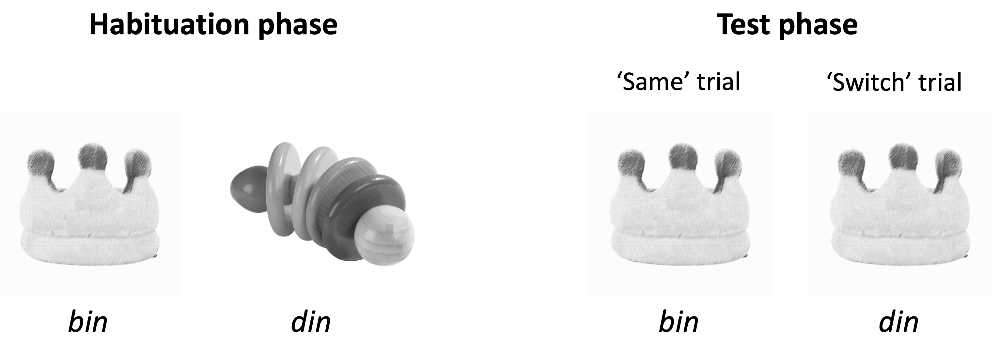
Figure 5.5: An example of a Switch task. During the habituation phase, infants repeatedly see two objects (pictures of unfamiliar toys), labeled with two novel words (‘bin’ and ‘din’, assuming the infants have not learned these words). When the habituation criterion is reached, two test trials are presented. In the ‘same’ trial, one of the objects (the crown-like toy here) is played with its original name, ‘bin’. In the ‘switch’ trial, the same object is played with the wrong label, ‘din’.
But if 14-month-olds can hear the difference between sounds like /b/ and /d/, why do they fail to use that ability to map words to objects? An explanation that has been put forward by the researchers who conducted the original Switch task experiments is that 14-month-olds do have the capacity to map segment-sized phonetic differences onto novel words, but they fail to show this ability in a Switch task because of the task demands that they face in learning new words in a laboratory setting (Pater et al., 2004; Stager & Werker, 1997). To “pass” a Switch task, you need to understand that the sound played with the object is meant to be the name of the object. You also need to retain enough visual information about the two objects so that you can correctly identify them later. For 14-month-olds, these steps may consume too much of their cognitive resources, compromising the ability to encode phonetic detail in combination with novel objects. Indeed, 14-month-olds can learn novel words that differ by a single segmental contrast when some of these task-related demands are eased by a change in the procedure. This can be accomplished, for example, by allowing the infants to see the novel objects used in the mapping task in real life before the experiment so that they do not have to focus so much on learning the novel objects (Fennell, 2012). Another change that allows 14-month-olds to pass a Switch task with words like /bɪn/-/dɪn/ is to name familiar objects (e.g., “Look at the car!”) before they are exposed to novel word-object pairs so that they understand that the novel words are meant to be labels for the novel objects (Fennell & Waxman, 2010). These findings indicate that underlyingly, 14-month-olds already have the capacity to encode segment-size differences in newly encountered words.
That is not to say that infants become adult-like in their ability to learn similar-sounding words by 17 months, the age at which they can “pass” the Switch Task on novel minimal pairs without the types of task-related scaffolding mentioned above. Older children, including 6-year-olds, continue to underperform compared to adults when learning novel minimal pairs in lab experiments while, at the same time, showing adult-like ability to quickly learn dissimilar novel words (e.g., /deʤ/ vs. /fʌʃ/) and to identify familiar minimal pairs (e.g., ball vs. doll, boat vs. boot) (Creel & Frye, 2024). The challenge that children face in learning minimal pairs in these experiments suggests that it takes more than some brief exposure to new words to build stable representations that distinguish similar-sounding words, and the process of acquiring sound units that can be generalized from a known word to another may be protracted (Creel & Quam, 2015), just like the ability to perceptually discriminate speech sounds, as we saw in Chapter 3.
5.5.3 Phonological awareness
As children grow older, they become able to respond to tasks that tap into their mental representations of word forms. For instance, they may be able to demonstrate that they analyze the word truck as having “four sounds” or sharing the “first sound” with the word toy. This type of knowledge is called phonological awareness. The development of phonological awareness has been investigated for different phonological units, such as the syllable (e.g., knowing that truck has one syllable but tractor has two), onset-rime (e.g., truck shares an onset with train and a rime with duck) and segment (e.g., truck and toy start with the same sound). The awareness of segments is usually called phonemic awareness. However, most research on “phonemic awareness” is actually examining children’s awareness of segments (i.e., consonants and vowels) rather than phonemes. I will have more to say about this issue below.
Manifestation of phonological awareness can be used as evidence that children’s phonological representations contain the particular unit of interest, but a lack of phonological awareness does not necessarily imply a lack of the unit in their representations. This is because the tasks that are used to measure phonological awareness usually require more than just having certain phonological units in lexical representations. First, many of these tasks are based on conscious reflection of our linguistic knowledge, or metalinguistic awareness. A child may implicitly know that cat contains an initial phonological unit that can be characterized as /k/, but may still not be conscious of that understanding to the extent that they can name or choose another word that starts with /k/. Second, some of these tasks require deliberate manipulation of phonological units. For instance, a deletion or elision task asks children what happens when we say cat “without the /k/”. To pass such a test, the child not only has to be aware of the segment but also be able to hold a mental representation of the entire word form from which they remove one phonological unit, a task that comes with a level of cognitive demand that is higher than, for example, listening to samples of auditory stimuli (Yopp, 1988). Fig. 5.6 shows how much metalinguistic awareness and task demands are involved in passing representative tasks that have been used to examine phonemic awareness.
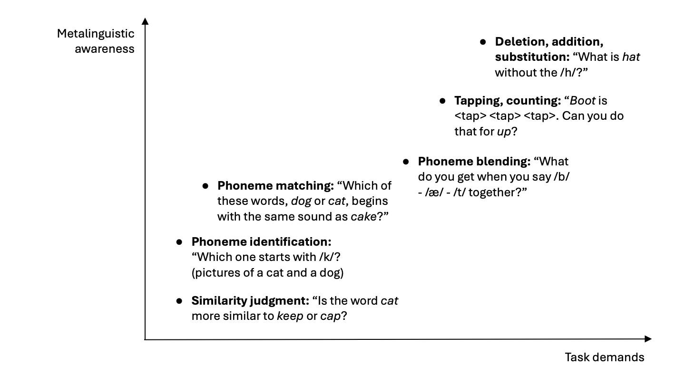
Figure 5.6: Typical tasks used to examine phonemic awareness and sample prompts. The tasks are positioned on the figure with respect to the level of metalinguistic awareness and the task demands they involve.
The age at which children exhibit phonological awareness is dependent on the task used to measure it. Only a small percentage of English-speaking 2- and 3-year-olds can perform phonemic awareness tasks that involve high levels of metalinguistic awareness and task demands, such as deletion, tapping and blending, although the proportion of successful performance increases progressively after age 4 (Carroll et al., 2003; Liberman et al., 1974; Lonigan et al., 1998). In contrast, younger children pass some phonemic awareness tests when the task demands are adjusted. For instance, instead of asking children to say a word that “blends” /k/-/æ/-/t/, Kenner et al. (2017) asked them to choose the resulting word from two options (e.g., cat and bat). In this task, 3.5-year-olds were able to select the correct response above chance level, and so did 2.5-year-olds, albeit only when the contrast was in the final position (e.g., boat and bowl). Changes in children’s performance in phonological awareness tasks, therefore, partly reflect their developing ability to handle cognitively complex tasks.
Because of this task dependency, it is not possible to provide a single answer to the question of when phonological awareness develops in children. But there are at least three systematic patterns that are worth mentioning. One is that the development of phonological awareness follows the progression from higher linguistic units to lower ones (Goswami & Bryant, 1990). Children first become aware of words as units of speech, followed successively by awareness of syllables, onset-rime units, and finally phonemes (Anthony et al., 2003; Carroll et al., 2003; Lonigan et al., 1998; Treiman & Zukowski, 1996). When 2- to 6-year-olds are given a blending task, they perform better when the components are syllables (“What do you get when you say /sɪs/ … /tɚ/ together?”) than when they are onset-rime (“What do you get when you say /h/ … /æt/ together?”), which, in turn, elicit better performance than when the units are segments (“What do you get when you say /f/ … /ɪ/ … /s/ … /t/ together?”) (Anthony et al., 2003). Syllable awareness typically emerges in children by 3 to 4 years of age, and onset-rime awareness by 4 to 5 years. Awareness of segment develops later, and, as we will see below, this type of phonological awareness seems to be related to the acquisition of literacy. This developmental progression involves the linguistic level of the units rather than the size of the shared elements.
To illustrate, when 5- to 6-year-olds are asked whether two words “sound the same at the beginning”, they are more likely to respond “yes” when the two words shared an onset (e.g., pacts and peel) than when they shared a segment but not an onset (e.g., plan and prow) (Treiman & Zukowski, 1996). As shown in Fig. 5.7, both pairs of words in this example share a single consonant (/p/), so if it is only a matter of size, we do not expect a difference between pacts-peel and plan-prow. But children’s perception that the first pair sounds more similar at the beginning indicates that they are comparing the onsets of each word (i.e., /p/ and /p/ versus /pl/ and /pr/) and basing their judgment on a higher, though not necessarily larger, phonological unit.
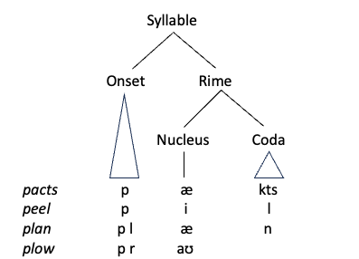
Figure 5.7: The syllabic structure of words used in Treiman & Zukowski (1996)
A second important observation about the development of phonological awareness is that the rate at which children become aware of phonological units differs systematically across languages. Many of these differences seem to be related to the phonological structure of the language. For instance, pre-school children learning Italian or Turkish have a higher level of awareness of syllables than children learning English (Cossu et al., 1988; Durgunoğlu & Öney, 1999). One plausible explanation for this crosslinguistic difference is that languages such as Italian and Turkish have a higher proportion of CV syllables than English, which makes it easier to identify the boundaries between syllables. The presence of codas (i.e., syllable-final consonants) and consonant clusters complicates syllabification. Complexity of syllable structure may, however, lead to better awareness of segments. Preschool children learning Czech outperform children learning English in tasks that target segments in onset clusters (e.g., “What happens when I take away the /k/ from klee?”) (Caravolas & Bruck, 1993). In this case, the wider range of onset clusters that Czech children hear in their language may draw their attention to the components of the clusters more so than in English. An illustration provided by Caravolas & Bruck (1993) is that as an initial consonant, /p/ only ever combined with /r/ or /l/ in English onset clusters, while in Czech, it can occur with many other consonants (e.g., /ps/, /pt/, and /pn/), and also as a second or third member of the onsets (e.g., /cp/, /fp/, /fsp/, /třp/). Because a consonant in an onset cluster signals a contrast in many different ways, Czech learning children probably attend to the unit to a greater degree than English learning children.
The last key point about the development of phonological awareness is that it is strongly influenced by children’s experience with written language. In particular, the awareness of segments and phonemes increases rapidly when children learn how to read letters that correspond with phonemes, as in alphabetic writing systems. The most telling evidence for this causal relationship between alphabetic literacy and phonemic awareness comes from children learning Chinese. Chinese characters, the native orthographic system of the language, do not have a correspondence between letters and phonemes like alphabetic systems. However, some Chinese first graders are introduced to a system of transcribing Chinese sounds at a phonemic level using the roman alphabet: Pinyin in mainland China, and Zhuyin-Fuhao in Taiwan. Where a romanized system is introduced in first grade, children show a sudden jump in awareness of segments as measured by tasks such as phoneme matching or deletion (Shu et al., 2008), and their performance is significantly higher compared to children in regions that do not introduce romanization at the same age (e.g., Hong Kong) (Huang & Hanley, 1995). Indeed, some researchers argue that without the knowledge of alphabetic writing, it will be difficult to acquire true phonemic awareness (Ziegler & Goswami, 2005). Awareness of phonemes, as opposed to segments, involves awareness that sounds in different phonological contexts and with different phonetic characteristics are in fact realizations of an underlyingly single unit (i.e., allophones of the same phoneme). For instance, the aspirated ([pʰ]) in pool, the unaspirated ([p]) in spoon, and the unreleased ([p̚]) in soup, are different phonetic forms of the phoneme /p/. Learning that these are manifestations of the same phoneme may require, or at least be helped by, evidence that they are all spelled by the same symbol ‘p’.
5.6 Phonological representations and the lexicon
Up to this point, we have been discussing how infants and children build phonological representations of new words without consideration of the rest of the lexicon. But unless we are talking about the very first words, infants already know some words. How does the existing knowledge of word forms affect the way they learn new words and the representations of known words? Above all, what impact does knowing some similar-sounding words have? For example, would infants learn the word cap differently if they already knew a similar-sounding word such as cat? And would the way they represent the word cap be different depending on whether they already know a word like cat?
5.6.1 Learning lexical neighbors
In Section 5.3, we saw that infants around the age of 14 months show some difficulties in learning two new words that are similar, such as bin-din. Would it be any different if one of those words were already known to the infant? Take, for example, the word ball, a word known to many 1.5-year-olds, and a similar word gall, a word that is so unlikely to be familiar to 1.5-year-olds that we can treat it as if it is a novel word to them. Words that differ by a single sound from each other are called lexical neighbors. Here, the (practically) novel word gall is a neighbor of a known word ball. Based on what we have said so far, we can be sure that by 1.5 years, English-learning toddlers have a fairly accurate representation of a word like ball. So we should expect them to be able to learn gall as a label for a new object as easily as they learn another label, such as meb, which is not a neighbor of any word that young children typically know. It turns out that this is not the case. Even at 17 to 20 months, English- or Dutch-learning children struggle to learn a new lexical neighbor like gall while having no problem learning new nonneighbors like meb (Swingley & Aslin, 2007). If they can perceptually discriminate ball and gall, and already know ball, why should they not be able to learn gall as a new word? A likely explanation is that children of this age are still learning how to determine the identity of a potentially new word form when it sounds similar to words they already know. Because the same word can sound different depending on the phonological context, speech rate, and speaker, we need to be alert to the possibility that the unfamiliar-sounding word is a particular rendition of a familiar word. Only when we are sure that it is different from any neighbors should we accept it as a novel word. If we think that [gɔl] might be how ball could sound sometimes, it is better not to treat it as a new word. Around 1.5 years, children seem uncertain about how to make that judgment. They are still learning the extent to which phonetic realizations of known words can vary and how to use that information to evaluate the identity of words they encounter.
As children add more and more words to their lexicon, we start to see patterns in the similarity between known words. Lexical neighbors can form a cluster of similar-sounding words, or a lexical neighborhood. One common way to define such a neighborhood is that it includes all the word forms that differ by one phoneme substitution, deletion, or addition (see Fig. 5.8). For instance, cat /kæt/ forms a neighborhood with pat /pæt/, cot /kɑt/, and cap /kæp/ through substitution, with at /æt/ through deletion, and with scat /skæt/ through addition. The size of such a cluster of similar words is called neighborhood density. A neighborhood with many similar words is said to be “dense”, while a neighborhood with few similar words is said to be “sparse”. Is a new word in a dense neighborhood more difficult to learn than one in a sparse neighborhood? This is a difficult question to answer because words in dense neighborhoods are also typically more frequent and have phonological patterns that are common in the language (i.e., “phonotactics”). When experiments are carried out controlling for those confounding factors, 4-year-olds are better at learning new words in a sparse than dense neighborhood (Storkel & Lee, 2011). This is only true, however, in a test given immediately after training. Once learned, words in dense neighborhood show better retention in a delayed test than words in a sparse neighborhood. This shows that, like 1.5-year-olds, 4-year-olds are also vigilant about a heard form potentially being a word that they already know but pronounced in an untypical way. This makes them less likely to readily accept a word in a dense neighborhood. But once they accept a form as a new word, they are better at remembering one from a dense neighborhood because the many existing lexical representations support and strengthen the representation of the new word.
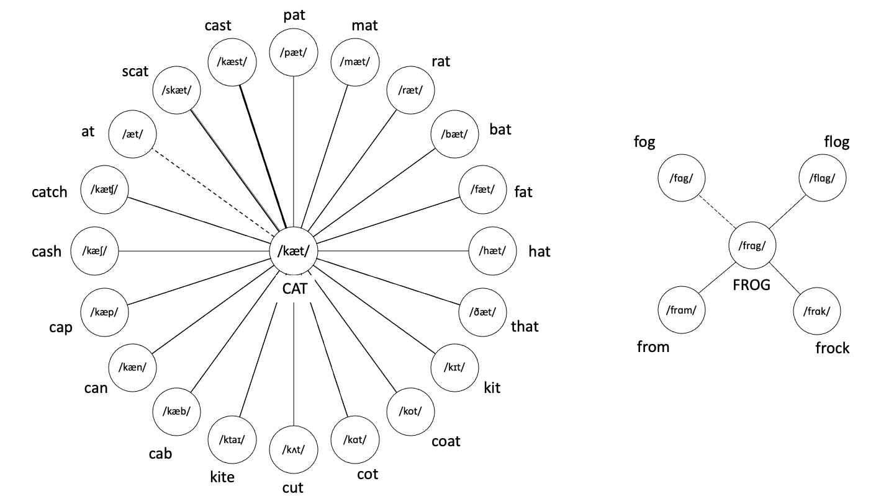
Figure 5.8: Neighborhoods surrounding the words CAT and FROG. The lines connect words that differ from CAT and FROG by one phoneme substitution (solid line), deletion (dotted line), or addition (thick line). With more neighbors, CAT is in a much denser neighborhood than FROG is.
5.6.2 Lexical restructuring and the granularity of representations
If neighborhood density can affect the way children build representations for new words, could it have a more general effect on the development of phonological representations? Suppose there is a young child who happens to know only two words: dog and tiger. For this child to recognize the two known words, it is enough to remember, say, that one has one syllable and the other has two. Imagine that this child has learned another word, cat. Now the number of syllables does not suffice to distinguish cat from dog. At least one of the consonants or vowels from cat or dog must be remembered accurately. Next, the child learns the word cap. To differentiate cap and cat, more phonetic details must be remembered, including, crucially, the place of articulation of the final stop in those two words. Based on this line of thinking, we can say that the more words children know, the more fine-grained their phonological representations must be in order to distinguish them from one another. But does that mean that children’s word representations are specified only to the extent necessary to separate the words that they know?
The idea that children’s representations of known words reflect the increasing pressure to discriminate words in their growing lexicon is known as the Lexical Restructuing Hypothesis (or the Lexical Restructuring Model) (Metsala & Walley, 1998; Walley, 1993). According to the Lexical Restructuring Hypothesis (LRH), children’s lexical representations change over time from relatively holistic and underdifferentiated representations to more detailed segment-based representations as the number of similar-sounding words that need to be distinguished from each other increases in their lexicon. The hypothesis also predicts that this restructuring takes place first in dense neighborhoods, where there is a stronger need to separate the neighbors, which then spreads to sparser neighborhoods. This restructuring of lexical representations is seen as a protracted process that extends into middle childhood.
The LRH is supported by a range of findings. Analyses of children’s lexicons based on speech produced by 5- and 7-year-olds and maternal speech addressed to 1-year-olds show that the younger the children, the less dense the neighborhoods are in the overall lexicon, suggesting that the pressure to represent words in more detail increases with age (Charles-Luce & Luce, 1990, 1995).
Metsala (1997) used a technique called gating to assess how children (7, 9, and 11 years) and adults represent words depending on their frequency and neighborhood density. In a gating task, participants need to guess a word based on the initial portion of the word. At the beginning, the portion played is very short (e.g., 100 ms), but its duration increases on each trial. The shortest duration it takes to guess the word correctly is used to estimate the amount of information needed to match what is heard with a known word. Metsala (1997) found that for frequent words, children needed to hear longer portions to correctly guess words from sparse neighborhoods than from dense neighborhoods. The 7-year-olds showed this effect more strongly than the 11-year-olds. The interpretation offered by Metsala (1997) is that in young children, frequent words that do not have many neighbors have less detailed representations than those that have many, making it necessary for them to hear a longer portion of the word before they can recognize it.
Neighborhood density also affects children’s judgment of similarity between words. For instance, 3- to 5-year-olds tend to judge two CVC words in a dense neighborhood to be similar when they share the same onset and nucleus (e.g., /tæp/ - /tæn) or the same nucleus and coda (e.g., /tæp) - /mæp/). However, in a sparse neighborhood, children tend to judge words to be similar if they share a nucleus and a coda with the same manner of articulation, even if it is not the same consonant (e.g., /tʌg/ - /mʌd/) (Storkel, 2002). It is as if the difference between rimes such as /_ʌg/ and /_ʌd/ did not matter for words in sparse neighborhoods. Thus, how fine-grained 3- to 5-year-olds’ phonological representations are seems to depend on the lexical density of the neighborhoods.
The Lexical Restructuring Hypothesis has met with challenges, however. Some analyses of children’s lexicons show that they are not necessarily sparser in overall neighborhood density than adult lexicons and may even be denser relative to vocabulary size (Coady & Aslin, 2003; Dollaghan, 1994). If this is a more accurate picture, then there is no reason why children are under less pressure to distinguish the forms of words that they know. Furthermore, if children’s vocabulary development is related to neighborhood density, and it is neighborhood density that is driving the refinement of lexical representations, we should see a connection between children’s vocabulary size and word recognition. But this prediction has not been supported. Many experiments using the mispronunciation paradigm show that 1- to 2-year-olds have fairly detailed representations of familiar words such as dog and baby because they look less at the pictures matching these words when they are “mispronounced” (e.g., tog for dog; vaby for baby) and this effect is not related to their vocabulary size, their age, or how many of these words they can accurately pronounce themselves (Bailey & Plunkett, 2002; Swingley & Aslin, 2000; Swingley & Aslin, 2002; Zesiger et al., 2012). Based on these findings, there is no clear evidence that children’s representations are more holistic because of a lack of pressure from the lexicon.
It appears, therefore, that the original Lexical Restructuring Hypothesis may be too strong. But then, how do we explain the neighborhood effects found in studies, for example, by Metsala (1997) and Storkel (2002)? Storkel (2002) proposes a version of the LRH that eschews some of the original assumptions but retains other tenets. According to this weak structuring account, there is no overall change in neighborhood density during development. Phonological representations of words are largely accurate and similar to adults’ in specificity. What changes is the salience of particular similarities between words relevant to lexical access; that is, how efficiently we can match the heard word with the stored form of it. During childhood, the manner of articulation may be the most salient aspect of the codas. Children, therefore, tend to use the manner of coda to identify words or judge similarities of words that share a nucleus. That is sufficient to identify words such as /tʌg/ and /mʌd/ in sparse neighborhoods. For words in dense neighborhoods, they will need to use more detailed information, which they can access in their representations if they need to. Seen this way, the neighborhood effects are about how children access words during word recognition rather than how they represent them in their mental lexicon.
5.6.3 Subsegmental representations of early words
We have now seen evidence that, by one year of age, children remember words accurately enough to notice, for instance, the mispronunciation of baby (/bebi/) as /vebi/. In this example, the deviance from the correct pronunciation corresponds only to the manner of articulation between /b/ (a stop) and /v/ (a fricative); otherwise, /b/ and /v/ have the same major place of articulation (labial) and voicing (voiced). In phonological theory, each of such dimensions of contrast is thought to constitute a distinctive feature, which acts as a building block of a segment. For example, in English, /b/ contrasts with /d/ by virtue of having a labial point of articulation, so it has the feature [labial]. It contrasts with /p/ by virtue of being voiced, so it has the feature [+voice]. It contrasts with /v/ for being a stop, which is produced without a continuous airflow, making it a [-continuant]. Putting these together, we can say that /b/ in English is made up of at least three distinctive features: [labial], [+voice] and [-continuant] (/b/ contrasts with several other segments in English, so it has other distinctive features, but for the sake of simplicity we will ignore them for the time being). Fig. 5.9 shows how representing these phonemes as bundles of features can capture the relationship between /b/ and various other consonants in English. Consonants such as /d/ and /v/ differ from /b/ by one feature, /t/ and /f/ by two features, and /s/ and /ʃ/ by three features. Each ring indicates the extent to which a particular phoneme is different from /b/ in terms of the number of features.
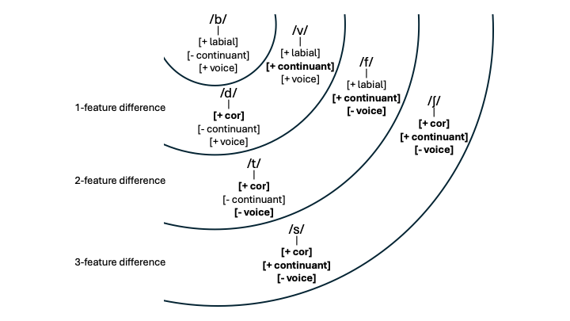
Figure 5.9: The relationship between /b/ and other consonants in English, presented in terms of distinctive features constituting each phoneme. Features that differ from those for /b/ are shown in bold. The position of the phoneme in the concentric structure shows its distance from /b/ with respect to the number of unshared features.
If early representations of wordforms contain segments that are made up of distinctive features as illustrated in Fig. 5.9, we expect children to show graded sensitivity to deviations from their lexical representations as measured by features. White & Morgan (2008) tested this prediction by showing 19-month-olds a picture matching a known word (e.g., a book) and an unfamiliar object (e.g., a paint roller), and measured how much the children would look at the familiar object when they heard the object named in a correct pronunciation (/bʊk/), a mispronunciation corresponding to a 1-feature difference (/dʊk/), a 2-feature difference (/tʊk/), or a 3-feature difference (/sʊk/). The results, shown in Fig. 5.10, were clear. For every additional feature difference between the correct word and the mispronunciation, the children looked less at the target object and more at the unfamiliar alternative. In two further experiments, White & Morgan (2008) demonstrated that the effects of a 1-feature mismatch are about the same whether it involves a feature of place, manner, or voicing, and similarly, the effects are about the same for any kind of 2-feature mismatch. These findings are remarkably consistent with the idea that in chidren’s representations of words, segments consist of discrete features such as [labial], [continuant], and [voice], which contribute equally to the identity of a segment.
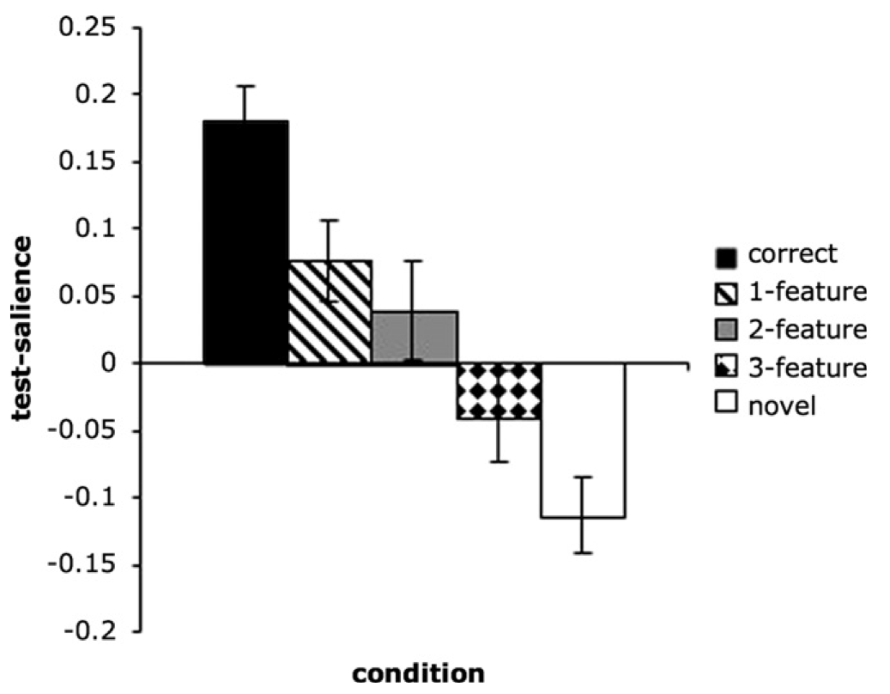
Figure 5.10: Results from Experiment 1 of White & Morgan (2008). The y-axis shows the change in proportion of looks to the pictures before and after the child heard the test word. A positive value means the child’s gaze shifted to the target object, while a negative value indicates a shift to the unfamiliar object. The x-axis shows whether the word they heard was pronounced correctly, mispronounced by different numbers of features, or completely different from the correct word (‘novel’).
But that is not the only possible interpretation of these results. Perhaps children only remember what /b/ in a word onset phonetically sounds like. A segment corresponding to a 1-feature mismatch ([d]) sounds different from /b/ but not as different as [t] (a 2-feature mismatch) because the acoustic difference between [b] and [t] is more noticeable than that between [b] and [d]. More featural differences typically mean more phonetic-acoustic differences, and children may simply be responding to such perceptual deviances rather than the number of matching features between what they remember and what they hear. These two possibilities are difficult to differentiate in consonantal contrasts because it is not immediately obvious how we can compare the acoustic distances between different types of consonants. However, there are more straightforward ways to compare acoustic distances between two vowels. One method is to look at the difference in the power spectrum: how the frequency components of the vowel vary in amplitude. Using this approach, Mani & Plunkett (2011) examined the effects of vowel mispronuncations corresponding to a 1-feature mismatch (e.g., /ʌ/ pronounced as [ɔ], a difference in roundedness), 2-feature mismatch (e.g., /ʊ/ prounounced as [ʌ], a difference in height and roundedness), and a 3-feature mismatch (e.g., /ɔ/ pronounced as [i], a difference in height, backness and roundedness). The mismatches were also measured in terms of power spectrum distance. As shown in Fig. 5.11, the gradedness of their sensitivity to vowel mispronunciation was better explained by the acoustic differences between the vowels than the number of features involved in the mismatch.
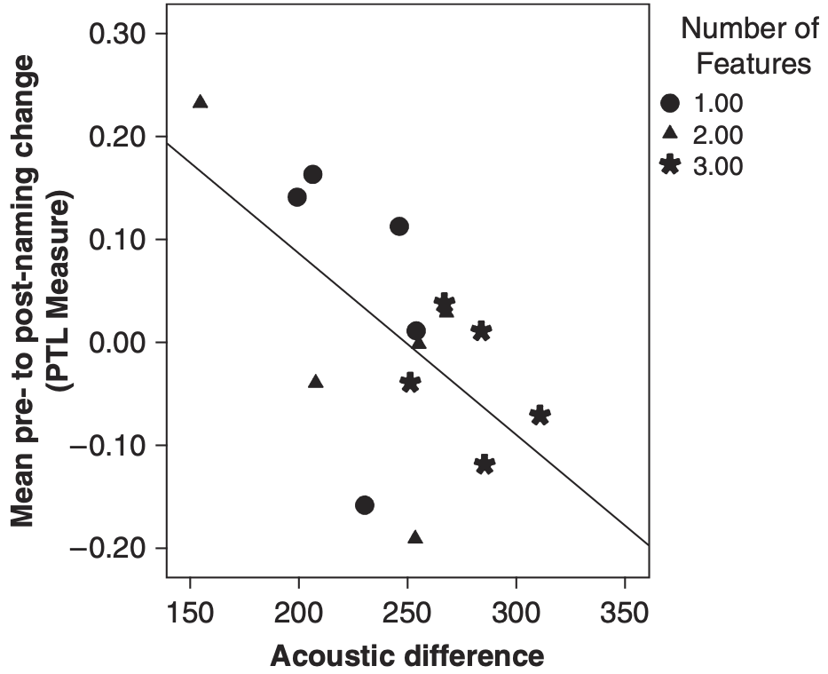
Figure 5.11: Results from Experiment 1 of Mani & Plunkett (2011). The y-axis shows the change in proportion of looks at the pictures before and after the child heard the test word. A positive value means the child’s gaze shifted to the target object, while a negative value indicates a shift to the unfamiliar object. The dots represent mispronunciation types classified by feature count differences (in shapes) and acoustic differences (in position along the x-axis).
Results like these do not necessarily mean that children’s representations of wordforms lack any discrete features below the level of the segment. Children may represent sounds of the words they know using elements corresponding to such as [labial] and [voice], and yet respond to mispronunciations on the basis of the perceived acoustic deviation of the mismatch. But it does mean that this issue cannot be settled on evidence from mispronunciation studies alone.
5.6.4 Models of word recognition and early phonological representations
Several models of early phonological representations have been proposed in relation to how infants and children recognize words. In this section, we look at two strikingly different approaches to understanding how children encode phonological information in the word forms they remember.
5.6.4.1 Abstractionist models of early representations
One perspective on the development of phonological representation is that the way infants and children store word forms in the mental lexicon is not fundamantally different from the way lexical representations are postulated in abstractionist theoretical models of phonology, especially those within the framework of Generative Phonology. Under this view, word forms in our mental lexicon are represented as structures consisting of abstract units, such as phonemes and distinctive features. To illustrate, the words duck and cat may be represented as shown in Fig. 5.12. These representations are abstract in the sense that they consist of discrete elements. Consonants are either [+cont] or [-cont], not gradiently more or less continuant. A voiced coronal stop (/d/) is the same entity across different words like duck, daddy, and food and regardless of the speaker. They are also abstract in the sense that they do not contain aspects of the word form that are predictable from the sound pattern of the language. For instance, the initial stop /k/ in cat is typically aspirated ([kʰ]) and different from the final stop in duck, which is unaspirated. But the representations in Fig. 5.12 treat those two phonetically different sounds as the same. This is because in abstractionist models, such systematic differences are provided by a rule in the phonological grammar (e.g., “Initial voiceless stops in a stressed syllable are aspirated”). The distinction between the aspirated [kʰ] in cat and the unaspirated [k] in duck, therefore, does not need to be encoded in the representations of these words.
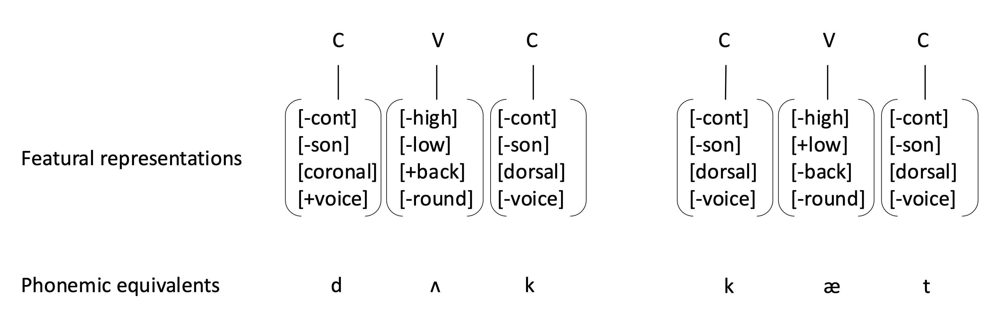
Figure 5.12: Representations of the words ‘duck’ and ‘cat’ with bundles of distinctive features corresponding to the strings of phonemes /dʌk/ and /kæt/. The feature [sonorant] contrasts (oral) stops [-sonorant] and nasals [+sonorant]
Representations like these are motivated primarily on the basis of analyses of a range of phonological phenomena we find in the sound patterns of the languages of the world. But there is also experimental evidence to suggest that they are consistent with the way adults recognize words (Lahiri & Marslen-Wilson, 1991; Wheeldon & Waksler, 2004). Some theorists of phonological acquisition hypothesize that this is also the type of representation that children build for words that they learn. In its simplest form, this hypothesis postulates that infants and children represent words like duck and cat with structures shown in Fig. 5.12, and use these representations to recognize these words. But this runs into several problems. For if that were the case, why do 5-month-old English-learning infants respond to names with an onset consonant with the wrong place of articulation (e.g., Nolly instead of Molly)? Why, in some experiments, can 14-month-olds learn lif and neem as labels of novel objects, but not bin and din? These observations indicate that contrasts in words cannot be encoded in a way suggested by Fig. 5.12, at least not from the earliest stages.
To accommodate these problems, proponents of abstractionist phonological representations have incorporated various developmental mechanisms into the model without abandoning the idea that the representational primitives remain constant. The key insight here is that elements such as distinctive features and the hierarchical structure that links them to segments and words are available from the beginning (in other words, they are innately available) but how they are used in the language to represent contrastive sounds in lexical representations is something that children need to figure out.
One proposal within this approach is that not every segment is uniquely linked to features from the beginning. Specifically, it has been proposed that some distinctive features are initially associated with the word as a whole (Fikkert & Levelt, 2008). For instance, the word dog may have only one place feature [dorsal], and all the segments in the word carry that single feature, as shown in Fig. 5.13. In the next stage, consonants and vowels can have different place features, but consonants in the same word still share a feature. And finally, different consonants in the same word can have distinct place features. In effect, this means that both the initial and final consonants in the early representation of dog are [dorsal] (i.e., /g/). We will discuss the full implications of this model for word production in the next section. But here, it is worth noting that this developmental picture captures the holistic nature of the earliest stage of lexical representations.
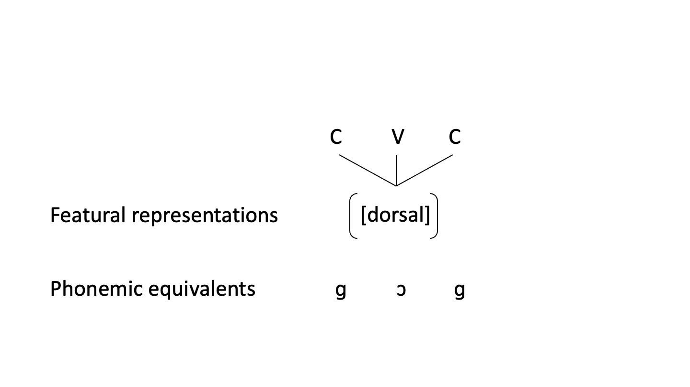
Figure 5.13: Earliest representation of ‘dog’ according to Fikkert & Levelt (2008).
When children begin to represent each segment with a bundle of features, they may need to work out the exact level of specificity needed in order to represent the contrast in the language because features themselves may have an internal structure. For instance, Brown & Matthews (2011) propose a hierarchical organization for place features as shown in Fig. 5.14.
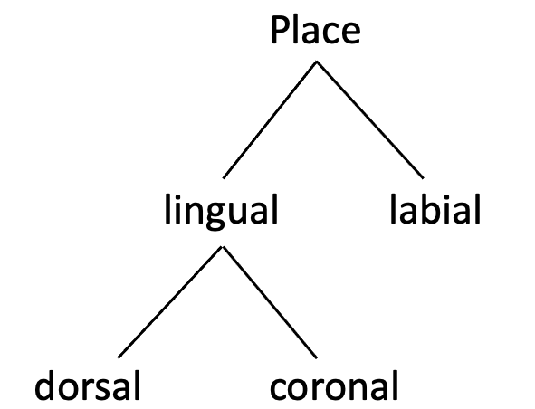
Figure 5.14: Internal organization of place features according to Brown & Matthews (2011)
Children explore the correct level of place specification for the language in this “feature geometry” in a top-down manner using lexical contrasts as evidence. The implication is that, initially, there is no place specification in the representations of words. Next, children undergo a phase when there is a contrast between [+labial] sounds (e.g., /b/, /m/) and [+lingual] sounds, which include both coronals (e.g., /d/, /n/) and dorsals (e.g., /g/, /k/), but there is no encoding of [coronal] versus [dorsal]. This may be sufficient specification for languages that contrast labials (e.g., /p, m/) and other supraglottal consonants (e.g., /t~k, n), but not coronals and dorsals, such as Hawaiian and Samoan. If children see that coronals and dorsals are contrasted in their language, they will further specify [lingual] into [coronal] and [dorsal]. In this way, representations of word forms become more specific as children explore the particulars of abstract features.
Children may also fill in the values of features following different paths depending on the type of the feature (Altvater-Mackensen et al., 2014; Van Der Feest & Fikkert, 2015). Van Der Feest & Fikkert (2015) distinguish features that all languages must have (“language-general”) and those that are present only in languages that need them for contrasts (“language-specific”). Features of major place of articulation, such as [coronal] and [labial], are language-general because all languages have some place contrasts, whereas [voice] and [continuant] are language-specific because not all languages contrast voiceless vs. voiced consonants or stops vs. fricatives. Language-specific features are addded to the representation only if the language requires them, while language-general features are present from the beginning. However, language-general features may be underspecified. For instance, there is a widely-accepted view in the phonological literature that coronal is the default place of articulation, which means that a coronal segment in a word can be missing a specification for place in the representation. If, during the early stages of development, place features are underspecified, they can lead to an asymmetry in the direction children match a perceived word form with the representations of familiar words, as illustrated in Fig. 5.15. Here, place is specified as [labial] for the labial [b] in ball, but is underspecified for the coronal stop in doll. If ball is mispronounced as [d]all, it will be detected because the perceived [d] sound is coronal, which conflicts with the [labial] feature in the representation. However, if doll is mispronounced as [b]oll, it will go undetected because the perceived [b] sound is labial, but the representation of the initial consonant is underspecified for place, so there is no mismatch. These predictions have been supported by in an experiment with 20-month-old and 24-month-old Dutch-learning children, who detected the mispronunciation of Dutch words such as boom [boːm] ‘tree’ as [doːm] but not of words such as duif [dœjf] ‘pigeon’ as [bœjf] (Van Der Feest & Fikkert, 2015).
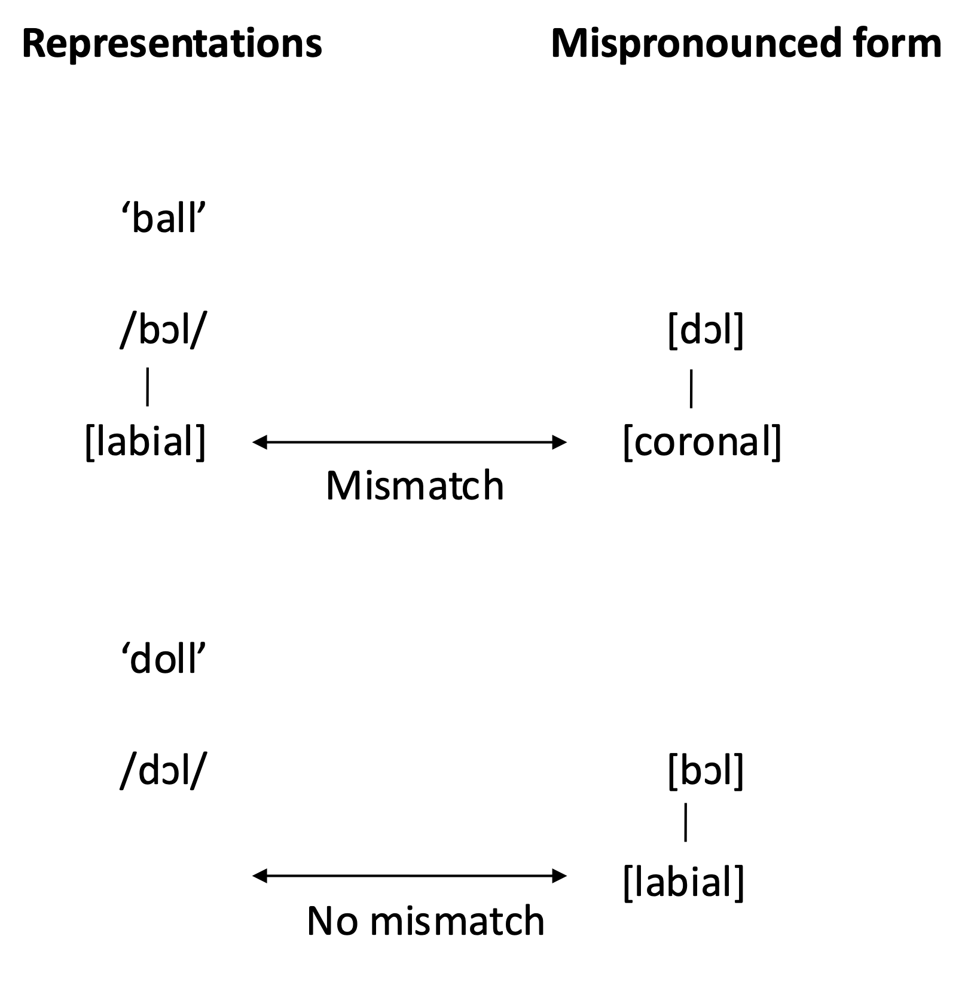
Figure 5.15: Asymmetries in the representation of place. Coronal place is underspecified in the representation of a coronal stop /d/.
Abstractionist models of early phonological representations follow a broader approach to understanding linguistic development, known as the Continuity Hypothesis, the notion that the principles that underlie linguistic structures remain constant during development (Macnamara, 1984; Pinker, 1984). The theoretical merit of this approach is that it requires less conceptual machinery to explain developmental changes as the same representational units are invoked to account for the differences observed between children and adults. Some of the phenomena which suggest that infants and young children may represent words differently from adults, such as their failure in noticing certain types of mispronunciations, can be accommodated while retaining the idea that the basic structure of phonological representations is present from a very early stage. The approach also generates unique predictions that follow from the assumption that not all phonetic differences are encoded in the lexicon, such as the asymmetry in the direction of mispronunciation detection due to underspecification. On the other hand, the idea that children’s representations of word forms are abstract fails to offer explanations for several developmental observations that we have discussed above. In particular, it is not immediately obvious how it accounts for the high level of sensitivity infants display for indexical information during word recognition, why 14-month-olds can learn novel minimal pairs if they are helped by reduced task demands, or why children’s phonemic awareness sharpens when they learn how to read alphabetic scripts.
5.6.4.2 PRIMIR: Processing Rich Information from Multidimensional Interactive Representations
There are several developmental models of word recognition that conceptualize phonological representations in a completely different way from the generative models. Rather than hypothesizing that word forms are represented on the basis of abstract units whose basic properties are predetermined, these models see the representations of words as something constructed from memory traces of our daily encounters with the words, or exemplars. Stored exemplars are typically “episodic” in the sense that they contain not only specific information about the stimuli (e.g., the raw acoustic perception of the word) but also the context of the experience (e.g., who said the word, how, and what else was happening). The general approach to mental representations based on exemplar is known as exemplar theory. In this section, we focus on one developmental model of phonological representation that is based on exemplar theory: PRIMIR or Processing Rich Information from Multidimensional Interactive Representations.
In PRIMIR, phonological representations are seen to consist of three multi-dimensional “planes” that interact with each other (see Fig. 5.16). The General Perceptual plane captures the rich information contained in the exemplars of words and sounds heard in the environment. This information includes variation that is phonetic (e.g., voice-onset time) or indexical (e.g., the speaker’s voice quality). As remembered exemplars accumulate, the General Perceptual plane begins to organize this information into different categories. Some sounds tend to have a particular voice-onset time and formant movement, forming a cluster that corresponds to, say, the category of syllable-initial [pʰ]. Others may carry a certain range of fundamental frequencies and voice quality, forming a category that corresponds to, for instance, the child’s mother’s voice. Clustering may also happen with recurrent sequences of sounds. Such units of sounds enter the Word Form plane. The clusters of exemplars that make up the remembered word forms in this plane also consist of both phonetic and indexical information. The Word Form plane is also the place where word forms are gradually associated with their meanings, which are pulled out from the many encounters the child has with the word said in different contexts, by different people, in different ways, but usually with some relevant information about the sense of the word. As more word forms are added to the Word Form plane, higher-order regularities emerge from overlapping categories among clusters of different dimensions. It is through this process that acoustic categories shared between words coalesce and give rise to the notion of phonemes. Phonemes reside in the Phoneme plane, and as they become more firmly established as units of contrast, they draw infants’ attention to that information in the word forms, allowing them to more readily learn and store representations for new word forms. Phonemes are also solidified by literacy and eventually reach a state where they become the type of abstract units posited in traditional models of phonology.
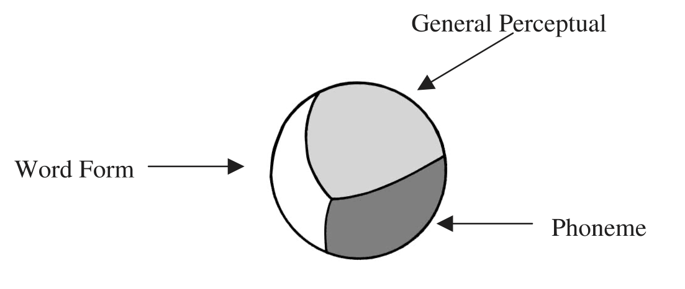
Figure 5.16: Multidimensional representational planes in PRIMIR. Source: Werker & Curtin (2005)
In addition to a theory of representations, PRIMIR has a theory of how the represented information is used in processing speech and language, including word recognition. This component of the model consists of three dynamic filters, which, together, direct the learner’s attention to different planes as they process the perceived acoustic information. The three filters are:
- Initial biases: These are biases that infants are born with or develop at the earliest phase of development, such as their preference for human speech, their predisposition toward segmenting speech into syllable-sized units, and their ability to discriminate speech sounds based on certain acoustic features like voice-onset time.
- Developmental level: The learner’s attention is drawn to different aspects of the incoming signals depending on their level of development. As phonemes begin to establish themselves, for instance, they will guide the infant’s attention to information that is relevant to the phonemic plane.
- Task demands: The requirements of the specific language task children are engaged in can also affect what type of information they focus on. In a mispronunciation experiment, the child’s task is to match the acoustic signal with a stored representation of a known word, whereas in a novel word learning Switch experiment, the child needs to extract the word form, store it and map it onto the visual object, which also needs to be stored in memory. Different tasks call for different types of processing and access to information.
The interaction of the Dynamic Filters is illustrated in Fig. 5.17. The different surface areas on the ball represent the three planes of representation. The overlaid square shows the effects of the Dynamic Filters, with the portion above the square indicating the information to which the attention is focused on. As illustrated by the three cases, both the amount and the combination of information in focus may vary due to the filters, namely the initial biases, developmental level and task demands. One scenario to which this applies is the 14-month-olds’ failure in learning novel word-object mappings from short lab exposures when the novel words are minimal pairs such as ‘bin’ and ‘din’. At this point of development, the Phoneme plane may not be established enough to draw their attention to the relevant acoustic information in the incoming signal to extract two contrasting representations in the Word form plane when the task demands consume other types of cognitive resources.
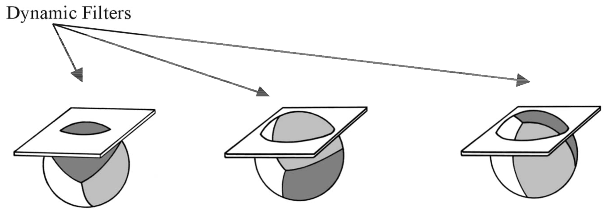
Figure 5.17: How Dynamics Filters direct attention in PRIMIR. Source: Werker & Curtin (2005)
PRIMIR attempts to provide a cohesive account of early speech perception and word recognition that addresses two important issues. One is that infants and children are sensitive to the categorical information that marks contrasts in sounds and words, but also to the rich gradient information contained in speech. The second is that the way they perceive sounds and recognize words changes with development, and also by the task they are engaged in. In this way, PRIMIR is able to explain why young infants are more influenced by indexical information, why acoustically similar contrasts are more challenging to encode in remembered forms of words, and why performance in word learning experiments shows interactions between phonological similarity and task demands. However, the explanatory power the model currently has could be seen as a potential problem. While the model makes some predictions—one of them is that once the Phoneme plane is established, infants should show evidence that they have access to phonemes in a variety of tasks—such predictions seem to be consistent with other developmental models. It remains to be seen whether more empirical evidence that uniquely supports PRIMIR can be found.
5.6.5 Summary: Word recognition and the development of phonological representations
Infants begin to recognize their names around 4 months and then go on to learn many common words in the following few months. Apart from those words that appear in single-word utterances, these word forms are picked out from running speech with the help of different cues, including the transitional probabilities between sounds, prosodic edges such as the end of an utterance, and the words and phonological patterns that have been learned. The remembered forms of the earliest words seem to be missing some phonetic details, especially in less salient positions such as unstressed syllables. They also contain indexical information such as the speaker’s identity and how the word was said, which affects infants’ recognition of words. By 14 months, children’s representations of familiar words contain enough phonetic details such that a mispronunciation by one dimension of a segment (e.g., place, manner) disrupts the recognition of those words, but their ability to readily learn similar-sounding words continues to develop during mid-childhood. Another aspect that shows a protracted developmental timescale is children’s awareness of segmental or phonemic units in words, an aspect that is boosted by the acquisition of literacy. How phonological representations of words unfold in children has been modeled in different ways, some from the perspective that the basic template of abstract representational units (such as phonemes and distinctive features) are available from the onset with the details filled out as the child discovers the organization of contrasts in the language, while some from the perspective that these representational properties emerge in a bottom-up fashion from the raw acoustic information contained in remembered exemplars of words.
5.7 Further readings and resources
- Word segmentation: Bergmann & Cristia (2016) is a meta-analysis of word segmentation studies carried out with infants. It includes a useful overview of the core findings.
- Transitional probabilities and statistical learning: The finding that infants can use transitional probabilities to segment words from running speech has generated a great amount of attention to infants’ ability to track statistical patterns in the input to extract linguistic structure, a learning process generally known as statistical learning. For an overview of infant statistical learning and its implications on early language development, see Saffran & Kirkham (2018).
- Word-internal phonological coherence: Recent work suggests there is yet another type of cue infants may be able to employ to segment words: The tendency for segments within a word to share certain phonological or acoustic characteristics. For example, Mintz et al. (2018) show that 6- to 7-month-old English-learning infants are more likely to extract disyllabic forms that contain vowels that agree in backness/roundedness (e.g., /podu/, /deti/) than those with vowels that disagree along that dimension (e.g., /pude/, /dito/).
- Indexical information in early representation: There is a rich and growing body of literature on early perception of indexical information that could not be fully covered here. For details, see Levi (2021).
- Phonological awareness: For a general overview of research on phonological awareness, see Anthony & Francis (2005).
- Phonological awareness and literacy: How phonological awareness affects reading is outside the scope of this book, but there is ample evidence that phonological awareness prior to learning how to read predicts reading and spelling acquisition (Goswami & Bryant, 1990). Combined with the impact of reading on phonological awareness, these findings indicate a bidirectional relationship between phonological awareness and orthographic knowledge.
- The Switch Task: The Switch Task, developed by Werker et al. (1998), is one of the most commonly used experimental methods to study the ability to map words and their referents. Tsui et al. (2019) provide a comprehensive review of the research conducted using this method.
- Mispronunciation sensitivity: The use of mispronounced words is another common method to study early word representations, focusing on infants’ and toddlers’ knowledge of familiar words. For an extensive review of the outcomes of studies using this paradigm, see Von Holzen & Bergmann (2021).
- Abstractionist and exemplar-based models of representations: The second half of Ernestus & Baayen (2011) offers a comprehensive discussion of the contrast between abstractionist and exemplar-based models of lexical representations. Those who are interested in learning more about exemplar theory can follow the excellent bibliography on the topic compiled by Kaplan (2017).
- As well as PRIMIR, exemplar-based approaches to early word representations have been adopted by the Word Recognition and Phonetic Structure Acquisition (WRAPSA) model (Jusczyk & Krumhansl, 1993).
5.8 Discussion questions
- How do we, as adults, segment speech into words in a foreign language? Are there any notable differences in the way adults deal with this problem and what does that tell us about the nature of the challenge infants face in word segmentation?
- The age at which infants become able to segment words from running speech in experimental contexts seems to vary from one language or dialect to another. What might explain these differences? Consider factors related to linguistic characteristics (e.g., Do some languages/varieties have phonological or lexical features that make their words easier to segment?), register (e.g., Do caregivers in some speech communities speak to children in a way that makes word segmentation easier?) and methodology (e.g., Can experimental design, stimuli or procedure make word segmentation easier?).
- The tendency for English words to have initial stress and its role in early word segmentation have been extensively studied in the literature. Do words in other languages have regular prosodic or other phonological characteristics that could be used as cues for word segmentation? What are they?
- In Chapter 2, we learned that as early as 1 month, infants can detect a switch from bug /bʌɡ/ to dug /dʌɡ/ produced by 12 different adult speakers (6 females and 6 males). In this chapter, you heard that when 7.5-month-olds are familiarized to words like cup and dog, they recognize them only when they are said by someone from the same sex as the person who read the familiarization stimuli and, if they are tested a day later, only when they are said by the same person. Are these findings contradictory? What do they tell us about the type of information infants encode when they hear words?
- The majority of studies examining the early representations used in word recognition focus on relatively short words that are assumed to be familiar to most learners (e.g., dog, baby). Less is known about the representations of longer words (e.g., elephant, banana) or words that specific individuals frequently produce. What implications might this have on our understanding of how infants and children represent word forms?
- Create separate lists of predictions about infants’ and young children’s recognition of word forms following abstractionist models and PRIMIR. How can we test those predictions?
- The following list shows the first 50 words American English-learning children comprehend based on parental survey data. If there is a child who knows all but only these words, which words are likely to have the most detailed representations, according to the Lexical Restructuring Hypothesis?
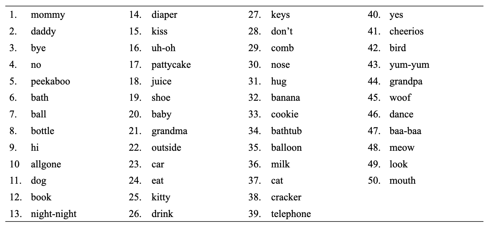
Figure 5.18: The first 50 words in the comprehension vocabulary of children learning American English, defined in terms of the percentage of children who were reported to understand that word. Source: Caselli et al. (1995)